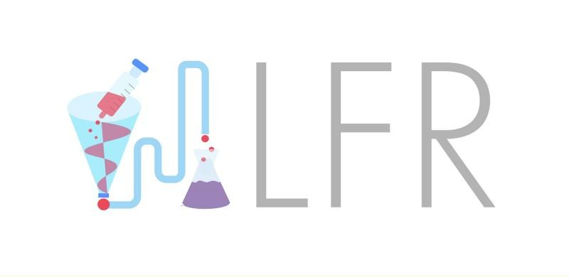
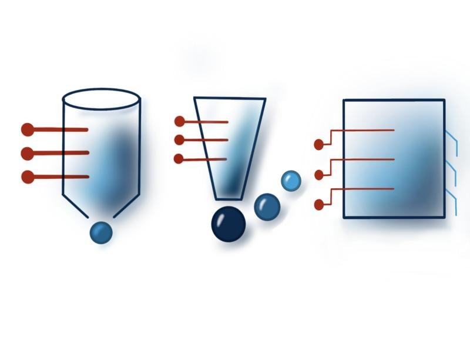
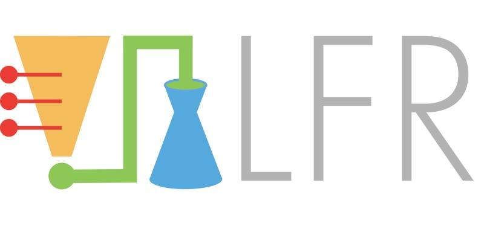
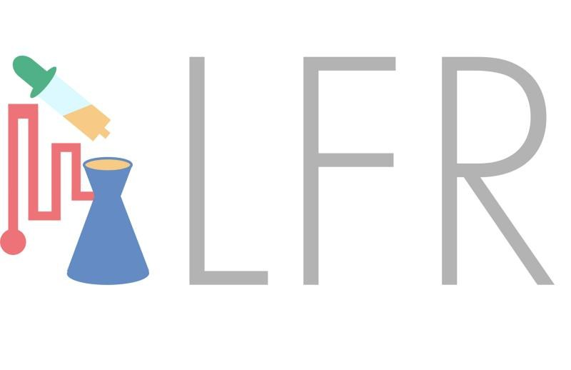
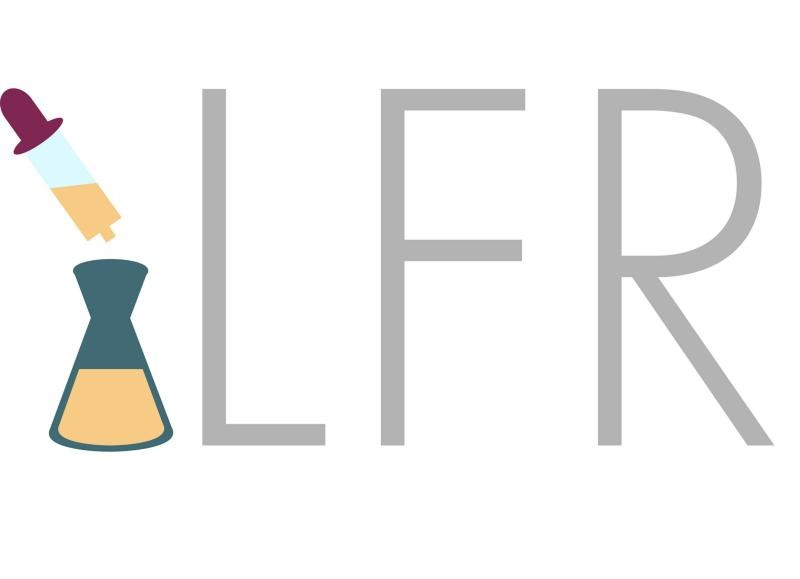

An 8-week design apprenticeship at Boston University, designing a logo for a research group’s coding language.

Role
UX Design Intern, Forge Design Labs
Client
A BU research group
Tools
Procreate, Illustrator, Figma
Timeline
8 weeks, summer 2020
The client
In summer 2020 I was selected as an apprentice at Boston University’s Forge Design Labs. Over the 8-week internship I learned Procreate, Illustrator and Figma while designing a logo for LFR, a coding language used by a research group on campus.
Iterations
After round one: gradients can’t be vectorized, so they had to go. Another language already used a microchip, so that was out too. The client asked for “LFR” in the logo, more color, less abstraction and a more dynamic, fluid element.
After round two: more lab equipment, fewer abstract objects, more fluidity. I added a realistic pipette dropping straight into a beaker in one version, and in another made the red connection bigger and attached it to the beaker to show the language’s digital and physical sides.
Final round: we combined parts of earlier designs using all the feedback.




Feedback from three client meetings shaped the final mark, from gradients and microchips to a clear, fluid lab scene.
more of my work